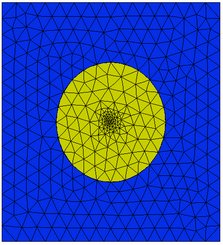

|
Controlling Mesh Density |

  
|
|
Controlling Mesh Density |
|
There are several mechanisms available for controlling the cell density in the mesh created by FlexPDE.
Implicit Density
The cell density of the created mesh will follow the spacing of points in the bounding segments. A very small segment in the boundary will cause a region of small cells in the vicinity of the segment.
Maximum Density
The global command
SELECT NGRID = <number>
controls the maximum cell size. The mesh will be generated with approximately NGRID cells in the largest dimension, and corresponding size in the smaller dimension, subject to smaller size requirements from other criteria.
Explicit Density Control
Cell density in the initial mesh may be controlled with the parameters MESH_SPACING and MESH_DENSITY. MESH_SPACING controls the maximum cell dimension, while MESH_DENSITY is its inverse, controlling the minimum number of cells per unit distance. The mesh generator examines many competing effects controlling cell size, and accepts the smallest of these effects as the size of a cell. The MESH_SPACING and MESH_DENSITY controls therefore have effect only if they are the smallest of the competing influences, and a large spacing request is effectively ignored.
The MESH_SPACING and MESH_DENSITY controls can be used with the syntax of either defined parameters or boundary conditions.
Used as defined parameters, these controls may appear in the DEFINITONS section or may be redefined in subsequent regional redefinition sections. In this use, the controls specify the volume or area mesh density over a region or over the entire domain.
For controlling the cell density along boundary segments, the controls MESH_SPACING and MESH_DENSITY may be used with the syntax of boundary conditions, and may appear wherever a boundary condition statement may appear. In this usage, the controls specify the cell spacing on the boundary curve or surface.
The value assigned to MESH_SPACING or MESH_DENSITY controls may be functions of spatial coordinate. In the example of the chapter "Generating a Mesh", we could write:
REGION 2 'blob' { the embedded 'blob' }
MESH_DENSITY = 50*EXP(-50*(x^2+y^2))
START(1/2,0)
ARC(CENTER=0,0) ANGLE=360
This results in the following initial mesh:

See also the example problems
"Samples | Usage | Mesh_Control | Mesh_Spacing.pde"
"Samples | Usage | Mesh_Control | Mesh_Density.pde"
Adaptive Mesh Refinement
Once the initial mesh is constructed, FlexPDE will continue to estimate the solution error, and will refine the mesh as necessary to meet the target accuracy. In time dependent problems, an adaptive refinement process will also be applied to the initial values of the variables, to refine the mesh where the variables undergo rapid change. Whereas cells created by this adaptive refinement process can later be re-merged, cells created by the initial explicit density controls are permanent, and cannot be un-refined.
Note: The adaptive refinement process relies on evaluation of the various sources and derivatives at discrete points within the existing mesh. Sources or other effects which are of extremely small extent, such as thin bands or point-like functions, may not be discernible in this discrete model. Any effects of small extent should be brought to the attention of the gridder by explicitly placing gridding features at these locations. Use REGIONS or FEATURES wherever something interesting is known to take place in the problem.
See also the FRONT and RESOLVE statements for additional controls.
Page url: index.html?controllingmeshdensity.html